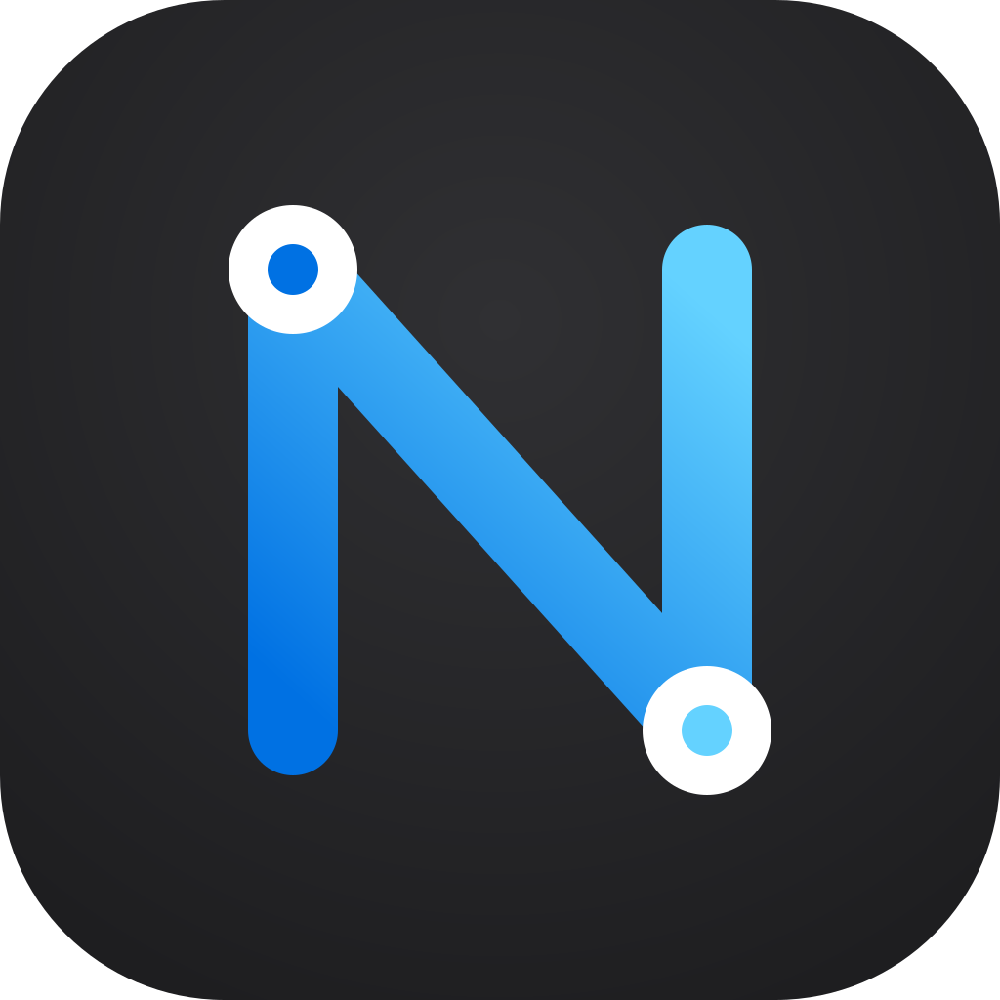
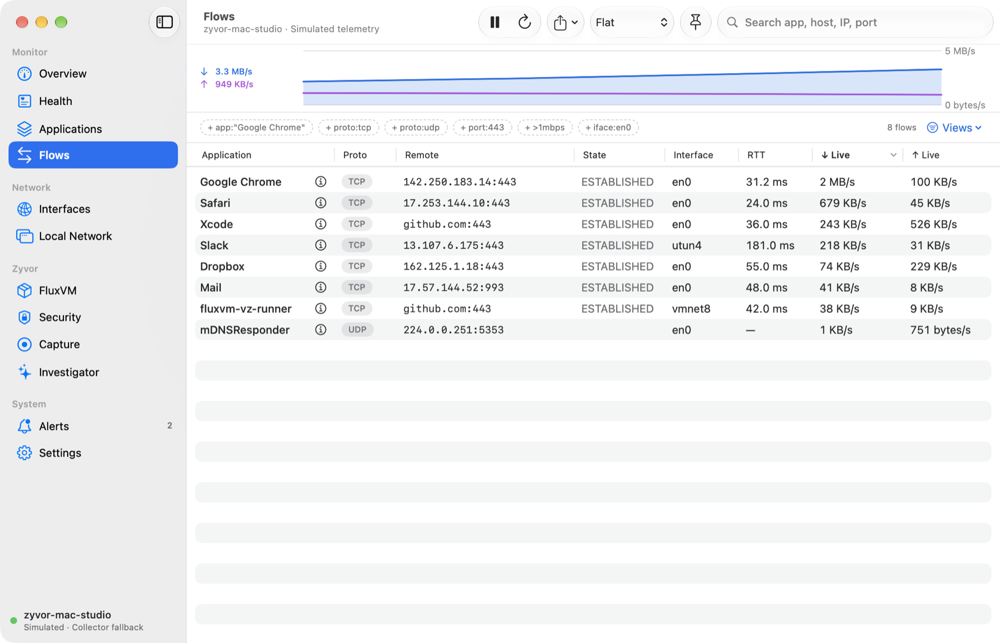
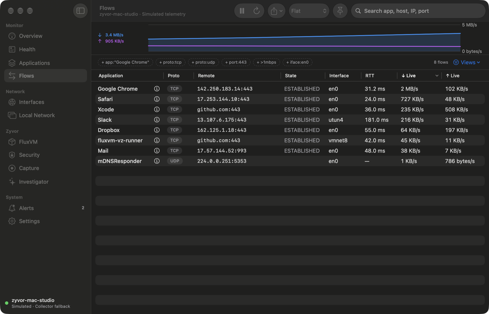

Applications
See who is talking.
Traffic grouped the way you think about it: by app, with live rates and destinations.

NivoraZyvor · network intelligence
Which app is talking to what, over which interface. Per-app flows, DNS, routes, VPNs, listeners and FluxVM workloads in a native SwiftUI app with a dependency-free collector. Local-first and observe-first: no payloads, no uploads, nothing blocked unless you say so.


2026-11-19 · full changelog · feed
Six panes of the native app, scrolled through. Every image is a demo capture on simulated telemetry.
Traffic grouped by application with live download and upload rates, totals and destinations.
Per-flow protocol, remote endpoint, state, interface and round-trip time, filtered with one grammar.
0 to 100 across route, DNS, latency, interfaces and safety, each component explained.
A local history of DNS, VPN, listener, interface and traffic-spike events.
A per-app trust score where every point maps to a visible check.
Exposed services, DNS that may bypass the VPN, mixed tunnel traffic. Alerts never block.
The Security and Capture panes (content filter, headers-only packet capture) are in the developer build only. They are compile-verified, not tested end to end, and are not part of this tour or of the signed build.
Applications
Traffic grouped the way you think about it: by app, with live rates and destinations.
Flows
Protocol, remote, state, interface and RTT per flow, plus a share menu and grouping.
Health
A score built from route, DNS, latency, interfaces and safety. Nothing is a black box.
Time Machine
Events stored locally in SQLite: DNS resolver changes, VPN state, new listeners, spikes.
Exports
CSV, JSON or NDJSON, optionally redacted of private IPs, MACs, SSID and hostname. Never packet payloads.
FluxVM
When FluxVM is running, Nivora reads its local API on 127.0.0.1:7788 and shows its VMs and sandboxes. The demo shows the runner process and its vmnet8 interface.
Every screenshot is the real native app on simulated telemetry.
Applications grouped the way you think about them, with live ↓/↑ rates, destinations and an inspector per app and per flow.
One filter grammar (app:Safari port:443 >1mbps !iface:lo0) with chips, saved views, grouping by app, host or interface, and baseline compare.
A 0–100 score with explained components: route, DNS, latency, interfaces and safety, plus a local, offline investigator.
Export flows, apps and the timeline as CSV, JSON or NDJSON, optionally redacted of private IPs, MACs, SSID and hostname.
Opt-in, headers-only packet capture through a separately approved helper: capped in time and size, downloadable as .pcap.
Sees your VMs and sandboxes beside host traffic, via FluxVM's local REST API on 127.0.0.1:7788.
A 0–100 trust score per app where every point is attributed to a visible check: code signing, new destinations, trackers, cleartext, exposure.
Evidence and plain-language reasons for one connection, plus shadow rules that count what a block would match without enforcing anything.
Diff any two points in the Time Machine and get an incident narrative: health delta, new destinations, DNS, routes and devices.
Keep rules in a file, plan them against the live rule store, apply only when you say so. Dry-run by default; blocks stay leased.
A read-only MCP server (tools, resources and prompts) and a CLI with JSON output and shell completions expose summary, flows, explain, diff, trust, privacy and path checks. Nothing that changes rules. MCP setup.
A Network Map from app to interface to destination, a Domains view of every remote host with the apps and ports behind it, and DNS, Routes and VPN panes. In the native app and the dashboard.
Opt-in webhook or syslog delivery of new findings, with a severity threshold and a cooldown. Off until you configure it; nothing leaves the Mac otherwise.
A small and medium widget and “How is my network?” in Shortcuts and Siri. Compile-verified; not yet seen in the widget gallery. Details.
A native app and a browser dashboard speak the same local JSON API. The collector is a single stdlib-only Python file.
Nivora.app (SwiftUI) / browser dashboard
│ HTTP JSON · 127.0.0.1 · bearer token
nivora.py (Python stdlib only)
┌───────────────┼────────────────┐
NetworkExtension nettop · lsof FluxVM :7788
content filter ifconfig · netstat VMs · sandboxes
(signed, opt-in) scutil · arp · ndp
└───────────────┴──────→ SQLite time machine
| Visibility tier | Needs | Gives you |
|---|---|---|
| Collector fallback | Nothing: works today | Per-app flows and byte counters from nettop/lsof, interfaces, routes, DNS, VPNs, neighbours, listeners |
| Content filter | Signed build and Apple's entitlement | Per-flow app attribution and byte reports straight from the system |
| Capture helper | Signed build and your approval | Headers-only .pcap of one flow, host or app, for a few minutes |
The notarized build, stated plainly.
| Area | Status |
|---|---|
| Notarized app | Apple notarization accepted and stapled; Gatekeeper accepts the DMG and the app, also with a download quarantine flag; the app launches and its bundled collector serves data the app decodes. Checked on Apple silicon. |
| Other macOS versions, Intel | Not exercised. The app is Apple silicon only. |
| Content filter and capture helper | Not in the notarized build (no NetworkExtension entitlement); not tested end to end. |
| Widget, Shortcuts and Siri phrases | Not exercised in the widget gallery or with Siri. |
No account, no cloud, no telemetry upload. The API listens on loopback with a random bearer token.
Rules default to observe. Block rules are one-hour leases and need the signed content filter to take effect.
Flow metadata only. The one exception, packet capture, is off until you start it, headers-only, capped and deleted after 24 hours.
Notarized, macOS 15 or later, Apple silicon. Gatekeeper opens it normally, with no warning. Start with a free 30-day trial key: sales@zyvor.dev, then enter it under Nivora > Licence….
Apple silicon · macOS 15 or later · signed and notarized · 30-day trial key.
SHA-256
6765d67f2dae19259b66f6c0e18f7f88db9f0d05be5c9aae2fb5134e2fc49440Verify: echo "6765d67f2dae19259b66f6c0e18f7f88db9f0d05be5c9aae2fb5134e2fc49440 Nivora-0.5.4.dmg" | shasum -a 256 -c
The notarized build has no content filter and no capture helper: both need an Apple NetworkExtension entitlement we do not have. Per-app attribution uses the built-in collector instead. Details: content filter and entitlements.
Nivora is early. Free for non-production use. For production use, including business and commercial use, buy a licence: ₹999 including GST (about US$12), one-time. Foreign cards pay the same rupee amount, converted by your bank. Need something customised, a company invoice or multi-entity terms? Write to sales@zyvor.dev.
Signed with our Apple Developer ID and notarized, so it opens without a Gatekeeper warning. It uses the built-in collector; it does not include the content filter or the capture helper, which need Apple entitlements we do not have.
₹999 incl. GST · business-use licence
Buy the signed appInternationalzyvor.dev/buy

A purchase licenses business and commercial use of that version and later ones on machines you own or operate. It does not cover redistribution or resale. Several companies or a larger rollout: sales@zyvor.dev. Licence terms. After payment you get a GST invoice and a download link by email. Earlier paid purchases keep their perpetual licence and need no key.
No. It records which app talks to which endpoint, how much, and over which interface. Packet capture is a separate, opt-in feature that keeps only packet headers by default.
Not by default. Rules start in observe mode. Blocking needs the signed content-filter extension and your explicit rule, and expires after an hour unless made permanent.
The notarized app and its collector are tested on macOS. The content filter and the privileged capture helper are not part of the notarized build and have not been tested end to end; the docs say so. Details.
Yes: a free 30-day trial key from sales@zyvor.dev. Nothing is disabled without a key.
No. The download is signed with our Apple Developer ID and notarized, so Gatekeeper opens it normally. Verify the checksum on the release page if you like. See the install guide.
macOS 15 or later, on Apple silicon. The app is SwiftUI with the Netra design language, shared with the browser dashboard.